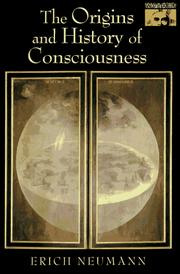

The Origins and History of Consciousness
Book·Erich Neumann, 1949·意识的起源与历史

Neumann uses myth to describe the process by which consciousness emerges from the unconscious. It is a founding work of the post-Jungian school.
- Author
- Erich Neumann
- Year
- 1949
- Difficulty
- Advanced
- Kind
- Primary text
- Schools
- Post-Jungian and Archetypal Psychology
- Core theories
- Developmental School of Analytical Psychology
Editions
- English edition The Origins and History of Consciousness Erich Neumann (trans. R. F. C. Hull) · Princeton University Press / Bollingen · 1954 Open Library ↗